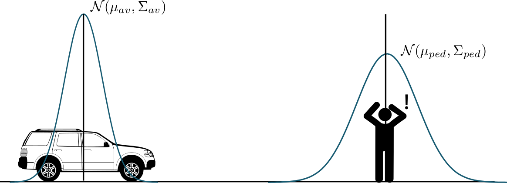
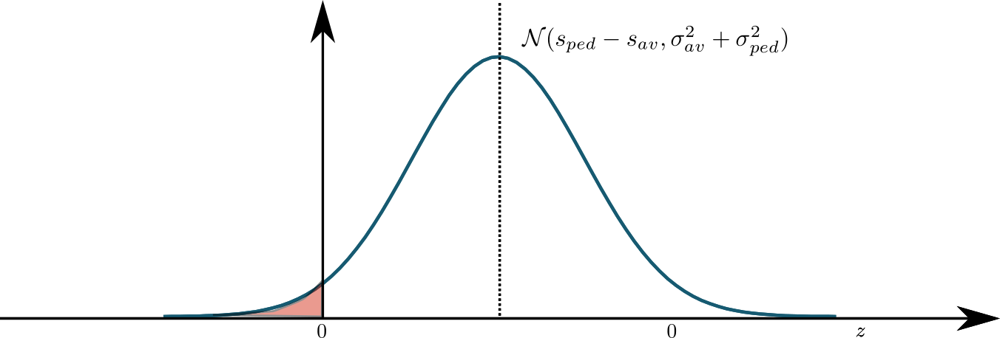

Safe Driving Speed for Self-Driving Car
Introduction
I think safety is not something luxury, but something we need to consider at the beginning of design. It won't happen automatically and we need to build safety into the design. Safety comes from design, not from testing. To achieve the desired safety assurance level, we need to figure out the critical performance parameters in the design.
Questions
- How can we evaluate how safe is the current design?
- We want the perception system to be perfect, but it is not practical. Then what's the required precision of the perception system?
- We can't know the extract location of the vehicle, then what's the required precision of the localization system?
- The software can't run infinite fast and the vehicle platform has an intrinsic delay. How does the perception-reaction delay impact on the safety of the whole system? What's a reasonable target maximum reaction delay?
A simple deterministic case study
Assuming the vehicle's initial speed is \(v_0\), its maximum deceleration is \(a\), the perception-reaction delay is \(\tau\), then the minimum stop distance is \[ d = v_0 \tau + \frac{v_0^2}{2 a} \]
If there is any obstacle within this distance, a collision will occur. To avoid collisions, the vehicle needs to ensure a clearance distance as a function of current speed \(v_0\).
\begin{equation} \label{eq:1} \mathrm{clearnace} = v_0 \tau + \frac{v_0^2}{2 a} \end{equation}Discussion:
- the required clearance distance increases with the reaction delay, \(\tau\), and the rate is the initial speed.
- The required clearance distance quadratically increases with the initial speed.
We have assumed the pedestrian doesn't move before the vehicle is stopped. What if he is moving towards us at speed, \(v_p\)? \[ \mathrm{clearnace} = \frac{v_0^2}{2 a} + (\tau + \frac{v_p}{a}) v_0 + \tau v_p \]
As we can see, there is a minimal clearance distance for moving obstacle, which is \(\tau v_p\), which \(v_p\) is the worst-case approaching speed.
The equation above gives us the relation between the reaction time, the clearance distance, and the driving speed based on perfect perception and localization. But the world is not perfect, we can't know our and others' exact location. We need take uncertainties into account so we can derive more practical performance requirements.
Probabilistic Collision
The collision probability for the AV with its environment at a particular moment of time: \[ p = \int_{\mathcal{S}} p_{av}(s) p_{env}(s) ds \] where \(p_{av}(s)\) is the probability of the av at location \(s\), \(p_{env}(s)\) is the probability that location \(s\) is occupied by its environment, \(s \in \mathcal{S}\) and \(S\) the operational area.
A simple probabilistic case study
Assuming the vehicle's initial position and velocity satisfy: \[ x_{av}(0) \sim \mathcal{N}(\mu_{av}(0), \Sigma_{av(0)}) \] where \(\Sigma_{av}(0)\) is the localization co-variance matrix at time 0.
Assuming the pedestrian's initial position and velocity satisfy: \[ x_{ped} \sim \mathcal{N}(\mu_{ped}(0), \Sigma_{ped}(0)) \] where \(\Sigma_{ped}(0)\) is the perception co-variance matrix at time 0.

For shake of simplicity, let's consider a simple linear system for the vehicle and the pedestrian: \[ x(k+1) = A x(k) + B u(k) \] where \(x := [\mathrm{position} \ \mathrm{velocity}]^{\top}\), \(u := \mathrm{acceleration}\),
\begin{equation} A = \begin{bmatrix} 1 & dt \\ 0 & 1 \end{bmatrix} \end{equation}and \(B = [0.5 dt^2, dt ]^{\top}\)
If we ignore the process noise and only consider the measurement noise, then we have
\begin{equation} \label{eq:prediction} P(t) = \begin{bmatrix} \sigma_p^2 + t^2 \sigma_v^2 & t \sigma_v^2 \\ t \sigma_v^2 & \sigma_v^2 \end{bmatrix} \end{equation}where \(\sigma_p\) is the position variance and \(\sigma_v\) is the velocity variance. Notice that the position variance at time t is \(\sigma_p(t)^2 = \sigma_p(0)^2 + t^2 \sigma_v^2(0)\).
Let's denote the distance between the vehicle and the pedestrian as \(z=s_{ped} -s_{av}\). Since \(z\) is a linear combination of two normal distributions, we have \[ p(z|t) \sim \mathcal{N}(s_{ped}(t) - s_{av}(t), \sigma_{p_{av}}(t)^2 + \sigma_{p_{ped}}(t)^2) \] Let's denote \(\sigma_{p_{av}}^2 + \sigma_{p_{ped}}^2\) as \(\sigma_{p}^2\), \(\sigma_{v_{av}}^2 + \sigma_{v_{ped}}^2\) as \(\sigma_{v}^2\).
Finally, we can get the collision probability at time t: \[ P(z \le 0 | t) = \int_{-\infty}^{0} p(z|t) dz \]

If we want the collision probability at time t, \(P(z|t) \le 2.5\%\), the clearance distance must satisfy: \[ z \ge 2 \sigma_{p} \]
So far, we know the relationship between a clearance distance and uncertainties. If we take the controlability into account, the clearance distance becomes:
\begin{equation} \label{eq:final} \mathrm{clearance} = v_0 \tau + \frac{v_0^2}{2 a} + 2 \sigma_{p}(T) \end{equation}where \(T\) is the time to stop and \(T = \tau + v_0/a\). Eq. \ref{eq:final} looks simple but has lot of information, for example, \(\sigma_p(T)\) depends on localization co-variance, prediction co-variance, and perception co-variance.
If using a prediction in Eq. \ref{eq:prediction}, we have \[ \mathrm{clearance} = v_0 \tau + \frac{v_0^2}{2 a} + 2 \sqrt{\sigma_{p}^2(0) + T^2 \sigma_v^2(0)} \]
In general, \(\sigma_v >> \sigma_p\), this equation can be further simplified as: \[ \mathrm{clearance} = \frac{v_0^2}{2a} + \big ( \tau + \frac{2\sigma_v}{a}\big ) v_0 + 2 \sigma_v \tau \]
Notice that there is a minimum clearance distance cause by the reaction delay: \(\mathrm{clearance}_{min} = 2 \sigma_v \tau\).
For the first time, we get the connection between the safe drive speed, the localization precision, the perception precision, and the system reaction delay. When we design a safe self-driving system, we need to consider the perception, localization, motion planning, and control system as a whole. I hope this equation can help us find such a safe system.
To be continued …